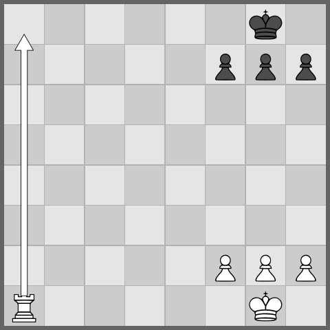
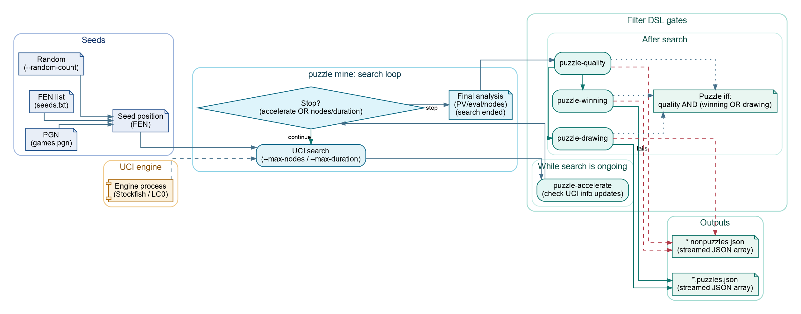

Workflows
Puzzle Mining
Mining is how a heap of positions becomes a labeled corpus of tactical and defensive puzzles. The puzzle mine command feeds seed positions to a pool of UCI engines, runs each candidate through a set of Filter DSL gates, and writes two parallel record files: the accepted puzzles and the rejected non-puzzles. Keeping both sides is deliberate. One run yields ready-to-use material for study books and the balanced positive/negative split a classifier wants. Nothing about the process is magic — you choose the seeds, the per-position node and time budgets, and the exact gate definitions, then read the result back with record stats and record tag-stats. Same inputs, same corpus.
What follows traces the workflow end to end: seeds, the puzzle mine run, the gates, the output files, conversion to PGN, and summarizing. The gate language has its own home in Filter DSL. For turning accepted puzzles into tensors or books, see Datasets and Book Publishing.

A mined tactical position, drawn by crtk fen render --arrow a1a8.
The pipeline at a glance
- Seed — produce candidate positions, either from PGN games (via
fen pgn) or by random legal generation. - Search —
puzzle mineruns each seed through a pool of UCI engines, bounded by--max-nodesand--max-duration. - Gate — the accelerate, quality, winning, and drawing Filter DSL programs decide what counts as a puzzle.
- Write — accepted rows go to
*.puzzles.json, rejected rows to*.nonpuzzles.json. - Summarize / convert —
record stats,record tag-stats,puzzle pgn, andrecord exportturn the dumps into reports, games, and datasets.

Step 1 — Seeds
Every mined puzzle begins life as a seed position, and there are two ways to get them.
PGN games (via fen pgn)
Real games are the richest vein: actual losing moves and actual defensive resources are sitting there in the movetext, already vetted by someone who had to play them. Point puzzle mine --input games.pgn straight at a PGN file, or pre-extract a FEN seed list with fen pgn when you want to inspect or reuse it.
crtk fen pgn -i games.pgn -o seeds/fens.txt
crtk fen pgn -i games.pgn -o seeds/pairs.txt --pairs --mainlineThe seed file is a plain FEN list:
- One FEN per line becomes that row's
position. - A
--pairsfile stores parent/child FENs so the move that created the candidate is preserved. --mainlinekeeps only mainline positions; omit it to include variation positions too.
Blank lines and lines beginning with # or // are ignored, so annotate your seed files however you like.
Random legal positions
Drop --input and puzzle mine invents its own positions. Use --random-count <n> for a fixed batch or --random-infinite to keep generating across a long, continuous run.
crtk puzzle mine --random-count 200 --output dump/random/
crtk puzzle mine --random-infinite --output dump/stream/ --max-duration 3sThree caps keep the random expansion from running away:
--max-waves N— cap the number of expansion waves.--max-frontier N— cap the frontier size per wave.--max-total N— cap the total number of processed positions.
Add --chess960 (or -9) to generate Chess960 starts and switch on Chess960 mode in the UCI protocol where the protocol template supports it.
Step 2 — Running puzzle mine
Everything else is preamble or cleanup; this is the run itself. puzzle mine reads seeds, fans searches out across an engine pool, applies the gates, and streams accepted and rejected rows to disk as it goes.
crtk puzzle mine \
--input seeds/fens.txt \
--output dump/run.json \
--engine-instances 4 \
--max-nodes 5000000 \
--max-duration 30sCore options
| Option | Purpose |
|---|---|
--input / -i PATH |
Seed file: .txt FEN list or .pgn games. Omit for random seeds. |
--output / -o PATH |
Output root file or directory; - streams to stdout. |
--engine-instances / -E N |
Size of the UCI engine pool (parallel searches). |
--max-nodes N |
Per-position node budget (go nodes N). |
--max-duration D |
Per-position wall-clock cap, e.g. 5s, 2m, or 60000. |
--protocol-path / -P PATH |
Engine protocol TOML file to drive the search. |
--random-count N |
Number of random seeds when no --input is given. |
--random-infinite |
Keep generating random seeds for continuous runs. |
--chess960 / -9 |
Generate Chess960 seeds and enable Chess960 in the protocol. |
The engine and budget defaults come from your configuration; the flags above override them for one run. The two knobs that matter most pull in opposite directions: more --engine-instances buys throughput but costs CPU and memory, while a deeper --max-nodes buys puzzle quality at the price of speed.
Smoke-check before a long job
A mining run can occupy a machine for hours, so spend thirty seconds proving the toolchain works before you commit to it:
crtk doctor
crtk config validate
crtk engine uci-smoke --nodes 1 --max-duration 5sdoctor inspects Java, config, the protocol, and local artifacts; engine uci-smoke confirms the configured engine actually launches and returns a move, which is the one failure mode that wastes the most of your time when it surfaces an hour in. See Getting Started for first-run setup.
Step 3 — The gates
A search result is not yet a puzzle. It becomes one only by surviving a sequence of Filter DSL programs — four of them, each overridable per run.
| Gate | Flag | Role |
|---|---|---|
| Accelerate | --puzzle-accelerate DSL |
Cheap prefilter that drops positions unlikely to survive the expensive checks, so the engine pool spends its budget where it matters. |
| Quality | --puzzle-quality DSL |
Effort, depth, and shape requirements a row must meet before it can be accepted at all. |
| Winning | --puzzle-winning DSL |
A decisive tactical resource: a single best winning move. |
| Drawing | --puzzle-drawing DSL |
A defensive save: the only move that holds the draw. |
The acceptance rule combines them:
quality AND (winning OR drawing)Clear quality and match either winning or drawing, and the row is written as a puzzle; anything else lands in the non-puzzle file. Override any gate inline to redefine what "puzzle" means for a given run:
crtk puzzle mine \
--input seeds/fens.txt \
--output dump/sharp.json \
--puzzle-quality 'gate=AND;nodes>=1000000;' \
--puzzle-winning 'gate=AND;eval>=3.0;'The full gate grammar — fields, operators, and worked examples — lives in Filter DSL.
Step 4 — Outputs
--output takes either a directory or a file-like root, and either way a single run leaves behind two parallel files.
Directory output writes timestamped, named pairs:
standard-<timestamp>.puzzles.jsonstandard-<timestamp>.nonpuzzles.json- Chess960 runs use
chess960-<timestamp>...stems.
File-like output reuses the stem you give:
--output dump/run.jsonwritesdump/run.puzzles.jsonanddump/run.nonpuzzles.json..jsonlroots follow the same stem behavior.
Each file is a JSON array that stays valid while rows are appended, so you can inspect a long run mid-flight and the downstream record commands can read it without any bespoke parsing.
Step 5 — Summarize and convert
A finished run is two files of records. The record and puzzle commands are how you read them, reshape them, and turn them into something else.
Summarize with record stats and record tag-stats
crtk record stats -i dump/run.puzzles.json
crtk record tag-stats -i dump/run.puzzles.json --top 25record statssummarizes a record file: counts, engines, and top tags.record tag-statsfocuses on the tag distribution;--top Ncontrols how many tags are listed.
The tags come from deterministic position and tactic tagging; Tag Reference lists the vocabulary.
Merge, split, and compare
crtk record files -i dump/ -o dump/merged.puzzles.json --recursive --puzzles
crtk record analysis-delta -i dump/run.puzzles.json -o dump/run.analysis-delta.jsonlrecord filesmerges, filters, or splits record files;--puzzles/--nonpuzzlesselect one side,--recursivewalks directories,--max-records Nsplits output.record analysis-deltacompares parent/child analysis changes — useful when seeds carry parent FENs fromfen pgn --pairs.
Convert accepted puzzles to PGN
crtk puzzle pgn -i dump/run.puzzles.json -o dump/run.pgnpuzzle pgn renders a puzzle dump as PGN games. Open them in any chess GUI and judge the quality with your eyes, which is still the best filter for a few minutes of spot-checking.
Export for training and study
crtk record export csv -i dump/run.puzzles.json -o dump/run.csv
crtk record export training-jsonl \
-i dump/run.puzzles.json \
-i dump/run.nonpuzzles.json \
-o training/run.training.jsonl
crtk record dataset classifier \
-i dump/run.puzzles.json \
-i dump/run.nonpuzzles.json \
-o training/classifier/runHanding both the puzzle and non-puzzle files to record dataset classifier is the whole reason mining bothers to keep the rejected side: positives and negatives, balanced, in one step. See Datasets for the full tensor export surface, and Book Publishing for turning puzzle records into native PDFs with book collection and book study.
Reproducibility checklist
Given the same seeds, engine, protocol, budgets, and gate definitions, mining is deterministic — which is worth nothing unless you actually capture all five. To keep a run reproducible:
- Run
crtk doctor --stricton the target machine and treat warnings as failures. - Run
crtk engine uci-smokewith the protocol, thread, and hash settings you intend to mine with. - Mine a small batch first, check
record stats, and open a few PGNs frompuzzle pgn. - Keep the config file, the protocol TOML, and the exact command line alongside the produced dumps.
Save the seed file, the gate flags, and the engine protocol together. They are the recipe — anyone with the same inputs can regenerate the same puzzle corpus.